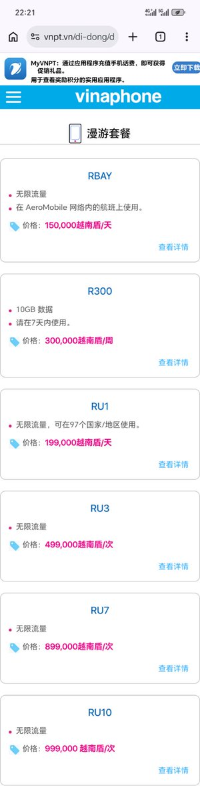
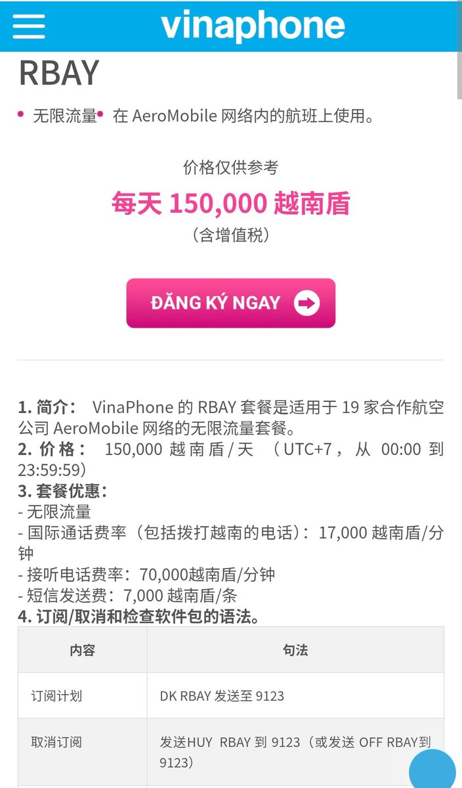
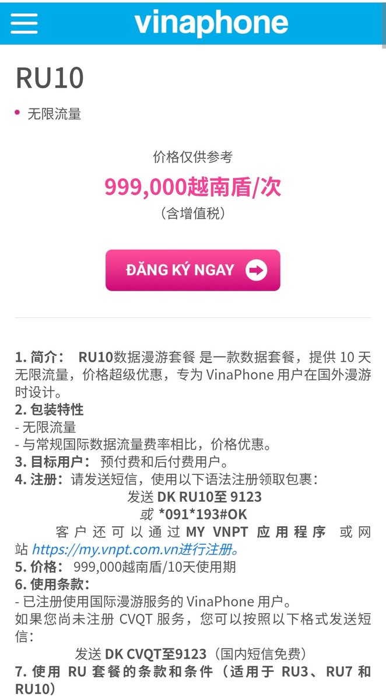

如果你不想当CMHK搅屎棍，忍受内地300Mbps（无论NSA或SA）限速，每个月还不愿给1200块的数据漫游自由圈网费，那去越南旅游时可以带一张vnpt电话卡回来，他家的漫游套餐还不错而且不限速，漫游中国移动和中国联通
RBAY航空漫游每天15万越南盾（约39元），飞机上的AeroMobile无限用；
RU1是97地无限量（含中国）每天19.9万越南盾（约52元）；
最划算的是RU10，10天99.9万越南盾（约260元），跟RU3和RU7一样全球可用，每个月订3次就是780元
不过目前没有eSIM，仅有实体卡但可以去越南旅游时办理，具体的套餐资费可以参考vinaphone官网：https://t.co/1cvDOJsncw


RBAY航空漫游每天15万越南盾（约39元），飞机上的AeroMobile无限用；
RU1是97地无限量（含中国）每天19.9万越南盾（约52元）；
最划算的是RU10，10天99.9万越南盾（约260元），跟RU3和RU7一样全球可用，每个月订3次就是780元
不过目前没有eSIM，仅有实体卡但可以去越南旅游时办理，具体的套餐资费可以参考vinaphone官网：https://t.co/1cvDOJsncw



中国移动集团员工“牛哥爱中国移动”在「通信人家园」论坛上发布《苹果SA漫游新消息》并不忘贬低CMHK用户，直言「你可以不用，我们不缺客户」、「搅屎棍」等逆天言论。 https://t.co/jgpsVyZkSw